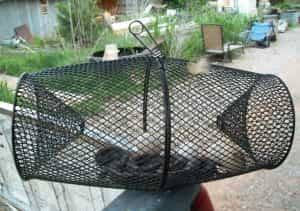

< < < Back
5 More Kama Sutra Positions – Return Of Kings
Recall a few months ago that I wrote an article introducing Return Of Kings readers to that classic of Indian eroticism, the Kama Sutra, and enumerated four sexual positions contained within that text. The response to that article was, for the most part, positive, notwithstanding a few commenters questioning how I could possibly learn anything from a barely civilized nation of street soilers!
Yes, I’m being sarcastic.
Ignoring India’s massive and memetic problems with open defecation, the Kama Sutra is still a masterwork of erotica, and should be studied by all.
Indeed, Vatsyayana’s magnum opus was the first Indian literature to be studied by both myself and Harry Flashman, and likely many other Western rakes as well. And so, handing the torch to a new generation of cads, let us learn another five positions from this text.
1. The Belly to Belly
Each partner stands with their legs planted on the floor (or the woman can wrap one leg around the man’s thigh should she desire). This allows the woman to either thrust or move up and down as the man thrusts as well.
Personally, I prefer the supported congress I discussed in the last article (because of the psychological sense of feeling like a barbarian), but this position is alright if you want the woman to do more of the work.
Playing this album is not required
2. The Top Position
Or, as I like to call it, the “literal spinner” position. Perhaps you’ve used the term “spinner” to refer to tiny, petite women, a term that refers to the potential for them to literally spin on the vertical axis represented by an erect penis.
Well, this is no longer mere hypothesis!
In this position, the woman gets on top and then “swivels 360 degrees.” And in case you were under the impression that this was merely a swiveling of the hips, the text continues to state that: “This position is for novelty only—the woman should be careful to avoid injury to herself or the man”.
Presumably what this position is named for
3. The Swing Position
Another woman on top position, this one manages the dual feats of feeling good for both partners and conveying a pretty clear psychological implication.
The woman places her back to the man and straddles his waist, mounting the penis. It facilitates the female orgasm, as most woman-on-top positions do, and the fact that the two partners never see each other’s faces makes it clear to both partners that this arrangement is purely a physical relationship, and that there is no longer-lasting affection. Should that be the message you want to convey, I would recommend using this position, and thus it is a useful position in your repertoire.
4. The Snake Trap
The name comes from how, in this position, there is no escape.
Anyway, the woman mounts the man in the usual way, but with her legs on either side of the man’s hips while the man outstretches his legs. Holding onto each other’s feet, both begin to thrust. A bit less intimate than the standard cowgirl position, but fun once in a while.

It doesn’t quite resemble an actual snake trap
5. The Bridge Position
And finally, we end with a position where the man gets on top, but with a bit of a twist. With the man on his knees, the woman does a back bridge, where the man then begins penetration.
This one is not one of my favorites, mainly because it’s apparently less pleasurable to the woman than a standard missionary—and yes, keyboard alpha males, I do concern myself with pleasing my women in bed. With all that being said, it does feel pretty good for the man, so I do not totally eschew it.
Reading my two Kama Sutra articles, you have a nice library of sexual positions. But there’s plenty more, and those will perhaps be another article some day in the future.
Read More: An Introduction To Kama Sutra Positions